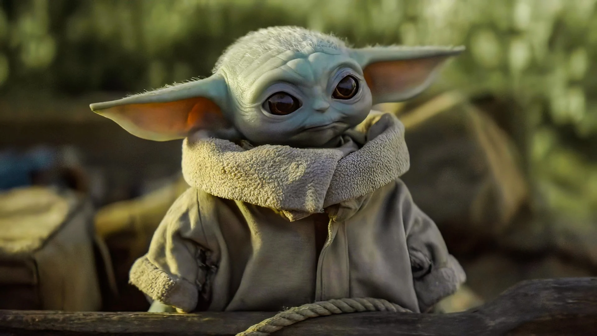
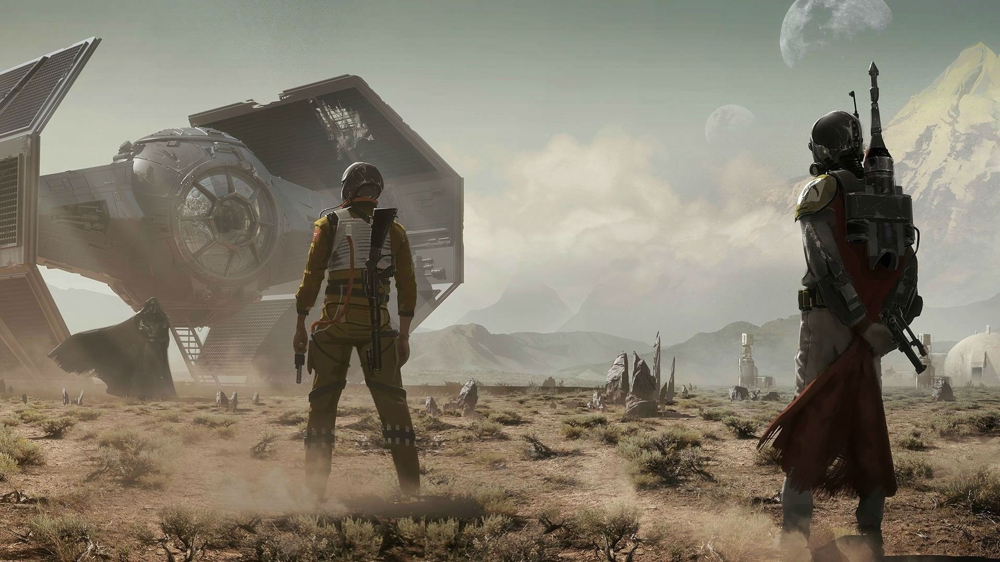
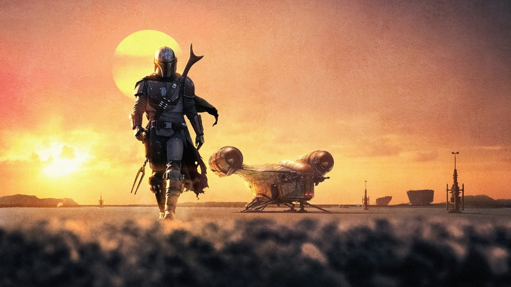
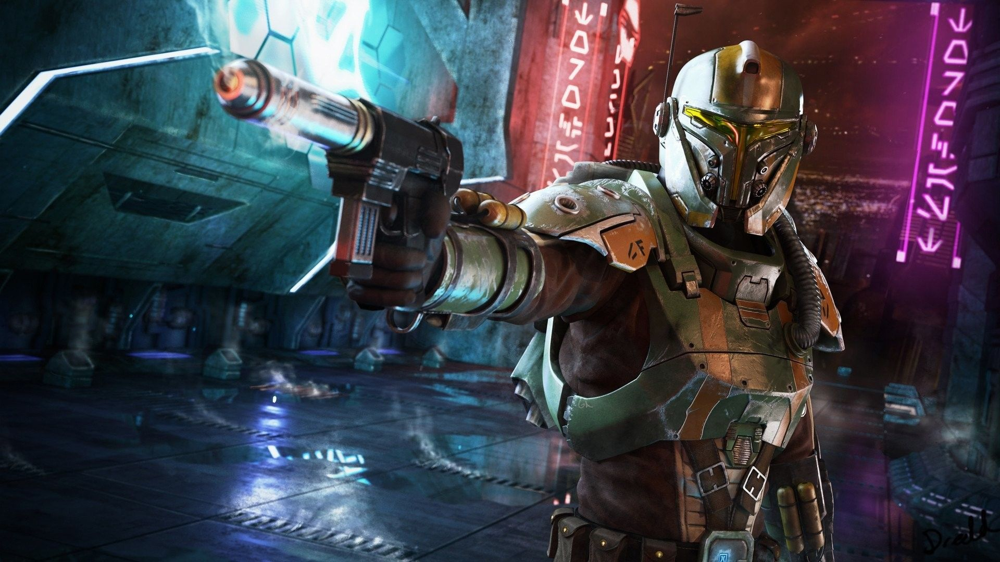
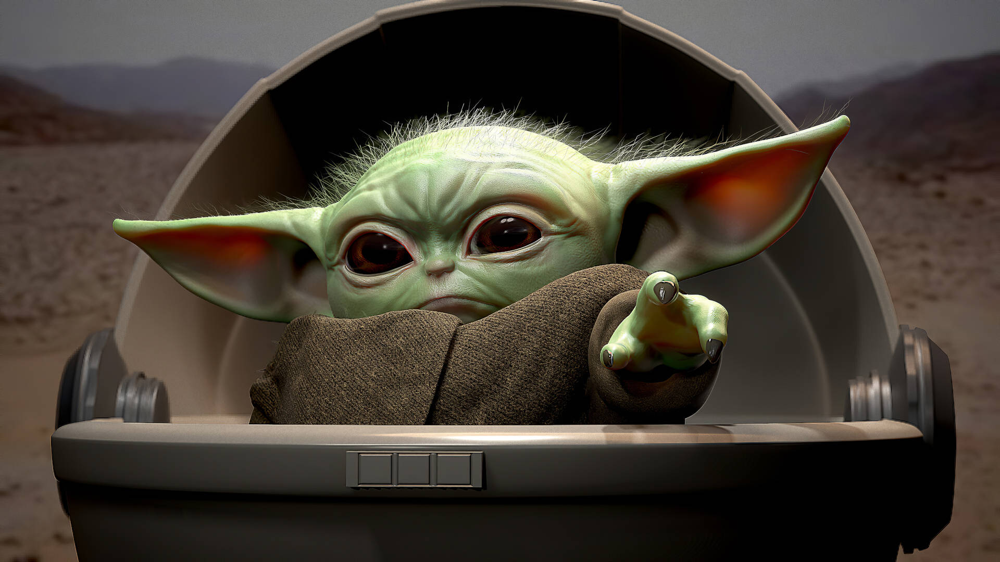
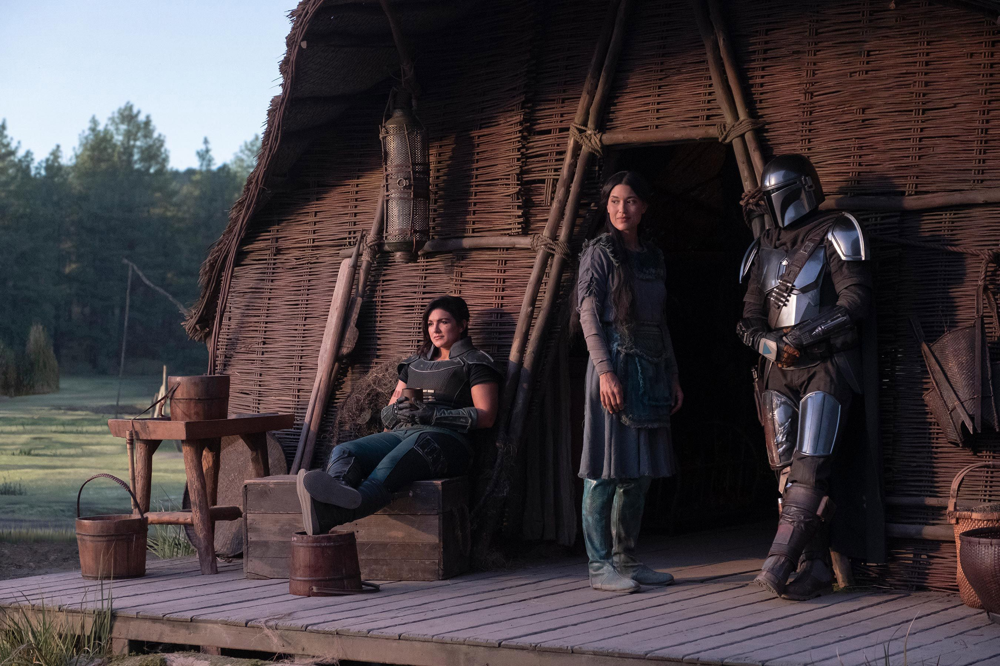

The Mandalorian segue a jornada de Din Djarin, um caçador de recompensas solitário, em um momento de transição entre o Império e a Primeira Ordem. Ele recebe uma missão para capturar um alvo misterioso, mas decide protegê-lo quando descobre que se trata de Grogu, um ser enigmático da mesma raça de Yoda. Enquanto busca compreender a origem de Grogu, eles são perseguidos por Moff Gideon, um ex-governador imperial cuja vida foi afetada pela destruição da Estrela da Morte pelos rebeldes.